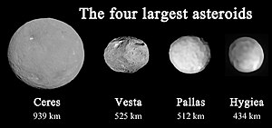

Our planetary system is located in an outer spiral arm of the
Milky Way galaxy.
Our solar system consists of our star, the Sun, and everything bound to it by gravity
the planets Mercury, Venus, Earth, Mars, Jupiter, Saturn, Uranus, and Neptune; dwarf
planets such as Pluto; dozens of moons; and millions of asteroids, comets, and meteoroids.
Beyond our own solar system, we have discovered thousands of planetary systems orbiting other
stars in the Milky Way.
Our planetary system is located in an outer spiral arm of the
Milky Way galaxy.
Our solar system consists of our star, the Sun, and everything bound to it by gravity
the planets Mercury, Venus, Earth, Mars, Jupiter, Saturn, Uranus, and Neptune; dwarf
planets such as Pluto; dozens of moons; and millions of asteroids, comets, and meteoroids.
Beyond our own solar system, we have discovered thousands of planetary systems orbiting other
stars in the Milky Way.
Why galaxy is called Milky Way?
Image result for milky way galaxy The Milky Way gets its name from a Greek myth about the goddess Hera who sprayed milk across the sky.This is what the Milky Way Galaxy looks like from Earth. Have you seen it in the night sky? If you could see our galaxy from the side, it would look like a huge, thin disk with a slight bump in the center.
 Asteroids are small, rocky objects that orbit the Sun. Although asteroids orbit the Sun like planets, they are much smaller than planets. There are lots of asteroids in our solar system. Most of them are located in the main asteroid belt a region between the orbits of Mars and Jupiter.
Asteroids: 5 Interesting Facts About These Space Rocks
- Asteroids are leftovers of the early Solar System.
- Most asteroids are in a “belt”.
- Asteroids are made of different things.
- Asteroids also lurk near planets.
- Asteroids have moons.
- We have flown by, orbited and even landed on asteroids.